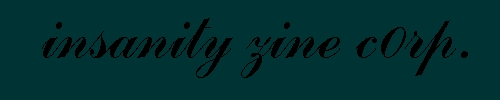
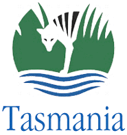

Australian Government wuz owned by InSaNiTy ZiNe c0rp.
for the second time!

is owned huhu
that's another NT server owned
NT's are secure if u take care of that
but IIS really sux
lazy and lame NT admins:
why you don't use something like apache for win32
it's harder to admin than IIS but it's a lot more secure.
greetz:
crime boys, prime suspectz, alldas.de, insecurenet
silver lords, thefairy, NeTRaP, kazu
#hackernews and #crack0r @ irc.brasnet.org
bl0w and inferno.br (you started it all guys)
ps2 / ntalk
izc0rp@mail.com